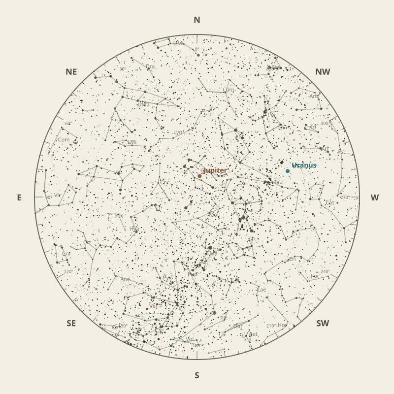

Monthly field almanac
February 2026
Observing reference for Malabar Coast, India.


The month in one sentence · at a glance
Galactic Centre viewing is best on 27 Feb 2026, from 4:04 am to 6:21 am, reaching 44°.
- New Moon
- 18 Feb Darkest skies
- Full Moon
- 2 Feb Brightest skies
- Best dark window
- 14 Feb 11h 30m
Conditions now
Is the sky likely to cooperate?
Checking the sky near Malabar Coast, India…
Find your bearings
The mid-month sky at 10 pm.
Face the matching compass direction and read outward from the centre toward the horizon.

Night planner
Plan the sky for your date.
Choose an observing date to see astronomical darkness, Moon interference, Galactic Centre visibility and the strongest planets.
Best low-Moon dark periods this month
- 6:56 pm–6:26 am11h 30m · 20% Moon
- 6:56 pm–6:25 am11h 29m · 12% Moon
- 6:56 pm–6:25 am11h 29m · 7% Moon
What deserves attention
Top picks for February.
- Milky Way
Milky Way core window
2h 17m with 44° altitude.
- Planets
Jupiter
Best monthly date at 79° altitude.
- Comets
Comet 24P
85° altitude; magnitude 14.6.
- Planetary events
Mercury greatest eastern elongation
Evening sky; 18.1° from the Sun.
- Occultations
HIP 38752 lunar occultation
12:49 am; Moon at 69° altitude for the first listed contact.


Moon and darkness
Read the lunar month.
Prefer minimum illumination for faint targets; bright lunar observing belongs near the fullest phase.
Complete lunar data →

Milky Way and deep sky
Recommended core sessions.
- 3:55 am–6:22 am2h 27m · core to 44°
- 3:57 am–6:21 am2h 25m · core to 44°
- 4:01 am–6:22 am2h 22m · core to 44°


Planet visibility
Useful at twilight.
Evening
- Uranus6 Feb · 7:00 pm82° · Excellent
- Neptune1 Feb · 7:00 pm39° · Good
- Saturn1 Feb · 7:00 pm38° · Good
- Mercury19 Feb · 7:00 pm11° · Poor
- Venus28 Feb · 7:00 pm6° · Poor
Overnight
- Jupiter1 Feb · 11:00 pm79° · Excellent
Predawn
- Mars26 Feb · 6:30 am5° · Poor
Other opportunities
Events worth noting.
- Comet 24P85° altitude; magnitude 14.6.
- Mercury greatest eastern elongationEvening sky; 18.1° from the Sun.
- HIP 38752 lunar occultation12:49 am; Moon at 69° altitude for the first listed contact.


Data and downloads
Need every detail?
2 comet calculations are unavailable; they remain in the data library.
Occultation times use a smooth lunar limb; confirm grazing events with IOTA Occult 4.